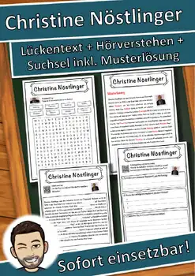

Printable Dinosaur Activities: Coloring Pages, Timeline & Craft, Grades 1-3
An expedition to prehistoric times: with these coloring, reading and craft pages, kids meet eight famous dinosaurs, color them, fill in child-friendly fact files and make standing dinosaur figures.
Included (15 pages + cover):
- Overview with notes for the teacher (1 page)
- Timeline of the Triassic, Jurassic and Cretaceous to color
- One coloring page and one fact file for each dinosaur: Tyrannosaurus, Triceratops, Stegosaurus, Brachiosaurus, Velociraptor, Ankylosaurus, Diplodocus and Parasaurolophus, with three fill-in sentences, word bank, tick boxes and size comparison (8 pages)
- Sorting page: what did the dinosaurs eat?
- How do fossils form? Put four pictures in the right order
- Craft sheet with four standing dinosaurs to cut out, fold and set up
- Dino memory game with 16 cards to cut out
- Answer key for the teacher
Use in class: Grades 1 to 3, also for special education, in science lessons (dinosaurs, prehistory, fossils). All student pages are reproducible, can be used on their own and have a space for name, class and date. A drawn guide character with an explorer hat accompanies kids on every page. The facts are child-friendly and checked: Velociraptor was only as big as a turkey and had feathers, and dinosaurs and humans never lived at the same time. The pictures are clean line drawings that save printer ink.
Texts, drawings and layout are my own work, AI-assisted and checked by me. No photos, no real people, no brands.
Have fun discovering, coloring and crafting! Snice :)
#Dinosaurs #Science #Elementary
⭐ Did this resource work well in your classroom? Please leave a quick review on TPT – you earn TPT credits for future purchases, and it helps me a lot! Click "Follow" on my store page to be the first to hear about new freebies.
U.S. STANDARDS (alignment):
- RI.1.1; RI.1.4; L.1.6; RI.2.1; RI.2.4; L.2.4; RI.3.1; RI.3.4; L.3.4; NGSS 2-ESS1-1; NGSS 2-ESS2-1; NGSS 4-ESS1-1; NGSS 4-ESS2-1; NGSS 4-ESS2-2; NGSS 4-ESS3-2; VA:Cr1.1.1a; VA:Cr2.1.1a; VA:Re7.1.1a
- Frameworks: Common Core State Standards for ELA/Literacy (CCSS); Next Generation Science Standards (NGSS); National Core Arts Standards (Visual Arts); WIDA English Language Development Standards (ESL/ELL)
- Also supports the state standards of non-CCSS states, e.g. Texas TEKS (English Language Arts and Reading, §110); Florida B.E.S.T. Standards (ELA); Virginia Standards of Learning (SOL); Indiana Academic Standards; Oklahoma Academic Standards (OAS); South Carolina College- and Career-Ready Sta
Similar resources

Roll an Art Style Dice Games | Cubism, Kandinsky, Mondrian, Klee & Marc Art

Claude Monet – Arbeitsblatt Lückentext & Hörverstehen (Deutsch / German)

Christoph Kolumbus – Arbeitsblatt Lückentext & Hörverstehen (Deutsch / German)

Christine Nöstlinger – Arbeitsblatt Lückentext & Hörverstehen (Deutsch / German)

Charles Lindbergh – Arbeitsblatt Lückentext & Hörverstehen (Deutsch / German)

Charles Dickens – Arbeitsblatt Lückentext & Hörverstehen (Deutsch / German)

Charles Darwin – Arbeitsblatt Lückentext & Hörverstehen (Deutsch / German)